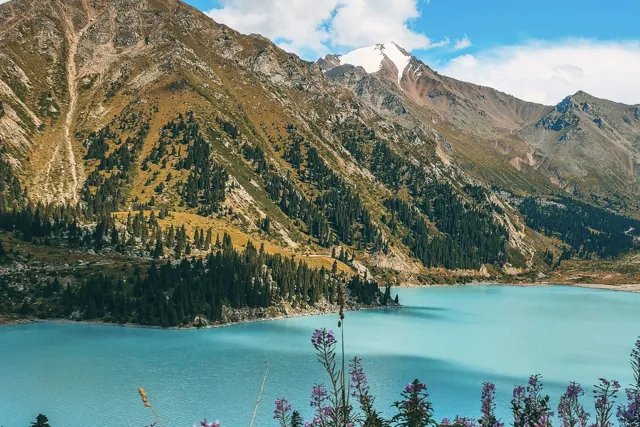
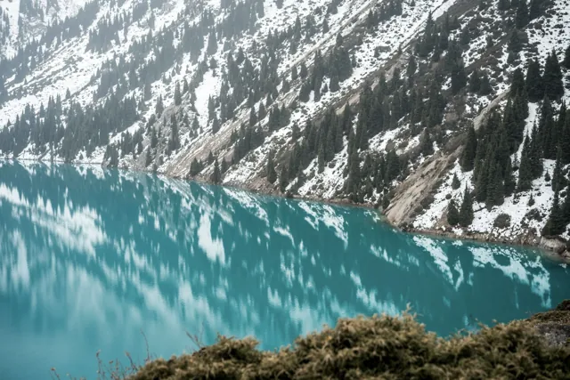
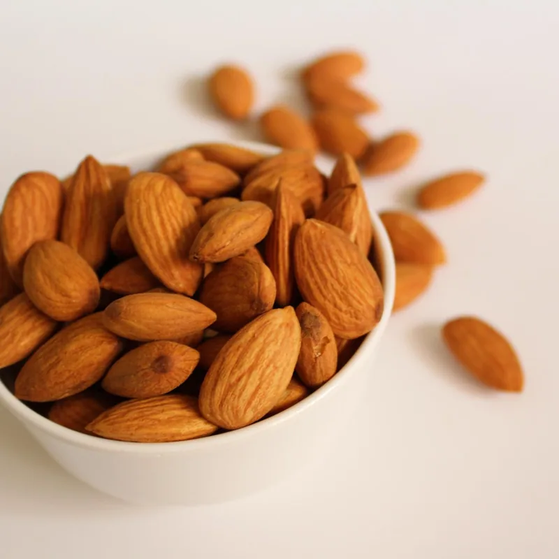

摄影来源 / Photo credits
山湖照片用于地域展示，商品照片为同类摄影参考，不代表实售商品的包装或产地证明。
Scenery is editorial. Product photographs are references, not evidence of packaging or origin.

Patrick Schneider
Unsplash · GHMS-uQC_Ow
Mockupo
Unsplash · 18uzMKQxYA4Unsplash License · 其他商品摄影 / Other product photographs
图片已裁切、缩放并转为 WebP。版权归摄影师所有。Images resized/cropped and converted to WebP. Copyright remains with the photographers.